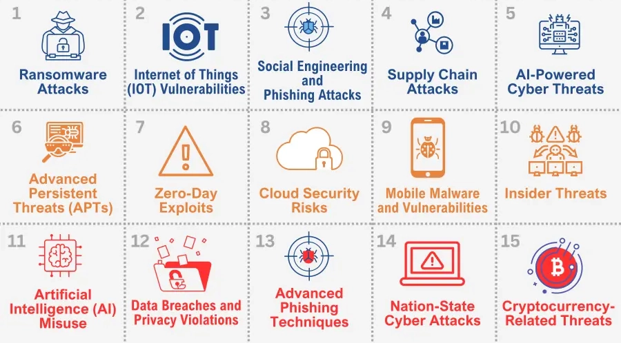
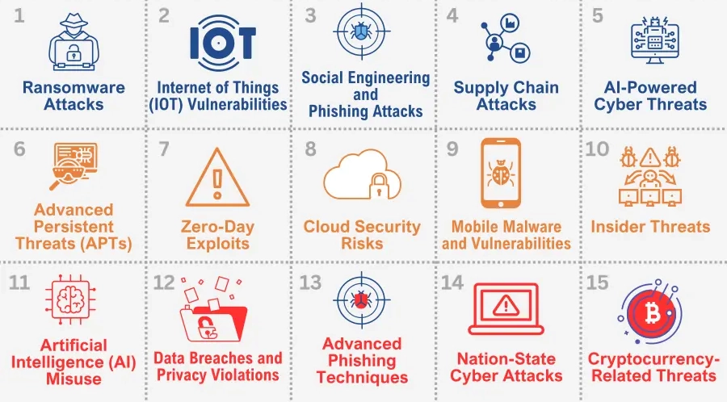

WebDevelopment
Web development is the process of building websites and web applications that people interact with using a browser (like Chrome, Firefox, Safari). It covers everything from a simple personal blog to complex platforms like YouTube or Amazon. It’s usually divided into front-end (the part users see and use) and back-end (the part that works behind the scenes).
Front-End Development (Client-Side) This is what runs in your browser. Its goal is to create a smooth, attractive, and interactive user experience. Languages: HTML (HyperText Markup Language) → the structure of a page (headings, text, images, links). CSS (Cascading Style Sheets) → the style and layout (colors, fonts, responsiveness). JavaScript → interactivity (buttons, animations, data validation, dynamic updates). Frameworks/Libraries: React, Vue, Angular, Bootstrap. These speed up development and provide reusable components. Tools: Browsers, developer tools, version control (Git).

CyberThreats
A cyberthreat is any potential malicious attempt to damage, disrupt, or gain unauthorized access to computer systems, networks, or data. Threats can come from hackers, malware, insiders, or even state-sponsored groups. The goal might be stealing data, causing chaos, or making money (like with ransomware).
Common types include malware like viruses, worms, ransomware, and spyware, phishing scams that trick people into giving away credentials, denial-of-service attacks that overwhelm servers, SQL injections that manipulate databases, and zero-day exploits that target newly discovered flaws. Insider threats are also serious, as employees with access can misuse or accidentally expose systems.
Defending against cyberthreats involves technical measures such as firewalls, intrusion detection systems, encryption, and strong authentication, combined with best practices like regular patching, security training, and limiting user privileges. Monitoring with tools such as SIEM helps detect suspicious activity. Real-world examples like the WannaCry ransomware attack or the Equifax breach show how dangerous unpatched systems and social engineering can be.
 

Operating Systems
An operating system (OS) is the core software that sits between a computer’s hardware and the applications we run. Without it, programs wouldn’t know how to talk to the CPU, memory, storage, or input devices. The OS manages everything so that multiple programs can share the same machine safely and efficiently.
The OS is made of several key parts. The kernel is the heart of the system, handling low-level tasks like process scheduling (deciding which program gets CPU time), memory management, and communication with hardware through drivers. The file system organizes data into files and directories on storage devices, while system libraries and APIs give applications a way to request services without touching hardware directly. The OS also provides user interfaces, like the command line or a graphical desktop environment, so people can interact with the machine.